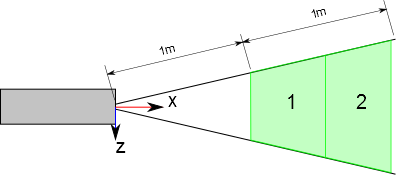

Laser¶
- class pyvsim.Toolbox.Laser[source]¶
This class is used to represent a laser light source with the associated optics for sheet formation. This is a simplification that saves a lot of computing power (instead of adding lenses).
There are two main methods in this class, that are:
- trace
- traceReflections
The first (trace) is used to determine the laser path until the measurement area. This also leaves interpolating volumes, that are used for determining how much power a point in it receives. The method trace can be thought of an initialization for the method illuminate.
An important parameter for the trace method is the usefulLength. This establishes the starting and the ending point of the measurement area, and is given as a list. For example - \([1,2]\) determines that the measurement area starts \(1m\) from the laser output and goes up to \(2m\).
The measurement area will be discretized with elements which length is specified in the property usefulLengthDiscretization. For example, if this parameter is set to \(0.5m\), the measurement region described above will be composed of two interpolating volumes.
A pictographic description of this scenario is shown below:
The origin and the orientation of the object are shown in this figure. The beam exits pointing at the \(x\) direction. The origin is the laser beam starting point.
The number of interpolating volumes should be kept as low as possible when creating synthetic images (as it is a bottleneck in the calculation). In the ideal case there should be only one.
The method traceReflections is used to trace the laser path (and its reflections) for determining a laser safety area. The calculation is very simple and is based on the concept of luminous energy per unit of area as shown below:
The simulation does not take into account energy losses during propagation, so the estimation is very conservative.
For the evaluation of complex geometries, the laser beam can be divided in several regions. Each region is then calculated independently, as shown in the figure below:
The discretization is determined by the parameter safetyTracingRays, which is a 2-element list which determines how many rays (not areas) will be created in the laser \(y\) and \(z\) directions.
It is important to consider that reflections in irregular areas will need a multitude of rays for proper execution. This can be computationally expensive.
Finally, when plotting the result of the traceReflections method, the energy density will be represented by the ray colors. The scale is logarithmic, and regions below the density specified in the safeEnergyDensity parameter will be depicted with white rays (for better contrast with deep blue rays, that represent low but still dangerous power)
Methods
- body = None¶
Laser head body
- bounds[source]¶
The laser participates in the ray tracing procedure only if it lays the volumes representing its light beam
- color = None¶
Laser head color
- dimension = None¶
Laser head dimension
- illuminate(pts)[source]¶
Given a set of points in space, this method calculates the light intensity (in \(J/m^2\)) and direction produced by the laser.
Parameters : pts : numpy.ndarray \((N,3)\)
A number of points in space
Returns : intensity : numpy.ndarray \((N,3)\)
A vector which norm is the light intensity (in \(J/m^2\)) pointing to the direction that the light emanating from the laser is
- rays = None¶
Ray bundle used for laser calculation (both safety and trajectory)
- safeEnergyDensity = None¶
Laser safe energy (in Joules/m^2), this is a value deemed safe for double-pulsed YAG lasers (5e-3)
- safetyTracingRays = None¶
Safety tracing resolution (amount of rays cast in the \(y\) and \(z\) direction of the laser when safety tracing is performed
- safetyTracingStrategy = None¶
Safety tracing commands concerning lenght and resolution. This parameter is a list of lists. The internal lists have two elements, the first is the maximum tracing distance (measured from the beginning of the tracing) and the second is the resolution (how long the tracing steps are). The outer list are the different tracing regions. For example: \([[1,1],[10,0.1]]\) will trace \(1m\) with \(1m\) step and then up to \(10m\) with \(0.1m\) steps.
- trace()[source]¶
Creates an assembly containing volumes representing the laser propagation. The volumes are created from usefulLength[0] to usefulLength[1], which is only a way to calculate less elements and reduce calculation costs, not an energy relation.
- Important parameters
- Laser.usefulLength : the useful region of the laser sheet
- Laser.usefulLengthDiscretization : the length of the discretization
volume. Shorter elements provide better interpolation, but make computation extremely costly.
- usefulLength = None¶
Start and end point of measurement area (used to save cycles in laser power calculation)
- usefulLengthDiscretization = None¶
Discretization refinement of measurement area (reduce to a minimum, if possible, as each point has to be checked for belonging to the measurement area
- volume = None¶
Assembly of volumes used for power interpolation
- wavelength = None¶
Laser beam wavelength (in meters)
{kind=link}
{kind=link}
{kind=link}